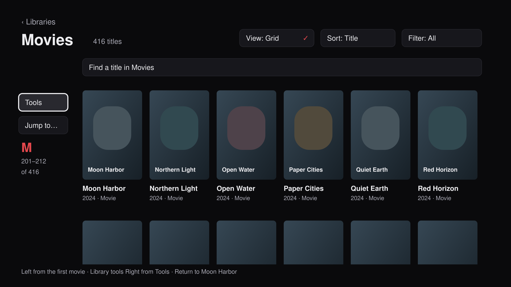

Navigation you can trust.
29 findings and risks. Twelve proposed screens and acceptance plates. One native focus failure reproduced with 416 synthetic movies. These designs are not implemented fixes.

Library tools within reach
Open full-size rendering ↗Tools stays beside the content. Left from the first column reaches it; Right restores the last movie. The current item survives detail, playback and view changes.

Opening View left native focus on the toolbar. Three Down presses selected A Movie 10 behind the panel. The menu's Rows, Grid and Close names exist in the accessibility tree, but their labels are not visually legible in this capture.
The harness uses the unchanged library UI with synthetic data and a direct entry. It does not establish a whole-app or physical-device pass.
Recommended first repair: native modal focus ownership, readable choices, and reporting inside player More. Then address browsing, secondary screens and the required remote-journey gate.